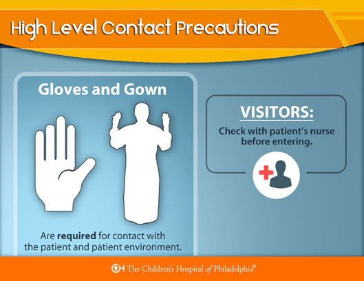
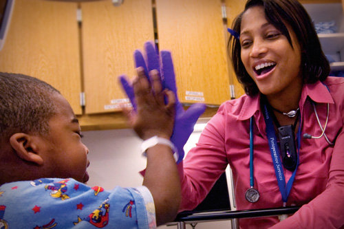

In 2014, CHOP maintained an impressive compliance rate of greater than 95% in hand hygiene.
To maintain and improve compliance, CHOP requires you, our employees, to
follow the World Health Organization’s (WHO) guidelines for hand hygiene.
But when and why should you practice hand hygiene? Let’s take a look at the 5 Moments of Hand Hygiene to learn more.
1
When? When approaching a patient, clean your hands before touching him/her.
Examples: shaking hands, helping a patient to move around, clinical examination
2
When? Clean your hands immediately before any aseptic task.
Examples: oral/dental care, secretion aspiration, wound dressing, catheter insertion, preparation of food, medications
3
When? Clean your hands immediately after an exposure risk to body fluids (and after glove removal).
Examples: oral/dental care, secretion aspiration, drawing and manipulating blood, clearing up urine, feces, handling waste
4
When? When leaving the patient’s side, clean your hands after touching a patient and her/his immediate surroundings.
Examples: shaking hands, helping a patient to move around, clinical examination
5
When? When leaving clean your hands after touching any object or furniture in the patient’s immediate surroundings, even if the patient was not touched.
Examples: changing bed linen, perfusion speed adjustment
The two things to remember when it comes to respiratory etiquette are:
Cover your mouth and nose with a tissue when you cough or sneeze. Put the tissue in the waste basket. Then wash your hands. If you don’t have a tissue, cough or sneeze into your upper sleeve or elbow, not your hands.
Remember, even if you haven’t touched a patient, clean your hands after contact with anything in the patient surroundings when leaving the patient room. Examples of patient surroundings include the bedside table, monitors, infusion pumps, bedside carts, and bed rails.
CHOP Ambulatory areas follow a modified version of patient surroundings in which items in the exam room are included as patient surroundings. Examples include keyboards, otoscopes, and cabinets.
CHOP employees must use Standard Precautions for every patient, every time, everywhere. They apply to all healthcare workers, regardless of role, and to all patients, regardless of diagnosis.
There are NO exceptions!
Standard Precautions = Hand Hygiene + Personal Protective Equipment (PPE)
Personal Protective Equipment (PPE) protects you from germs and harmful chemicals. Determine which PPE you need based on the contact you expect to have with the patient.
Review the information below to learn more about the different types of PPE, their uses, and examples of each.
Gown
Protect skin and/or clothing when you anticipate splashing
Feeding a baby with reflux
Gloves
Protect your hands when you may come in direct contact with blood, bodily fluids or chemicals
Drawing labs, using a Sani-wipe to clean a surface
Masks and/or respirators
Protect your mouth and nose from droplets
Open suctioning
Goggles
Protect your eyes from splashing of body fluids or chemicals
When caring for a patient with behavior concerns such as spitting
Face Shields
Protect face, mouth, nose and eyes from splashing of body fluids or chemicals
Cleaning surgical instruments, resuscitation of trauma patient
Why Use: Protects skin and/or clothing when you anticipate splashing
Example: Feeding a baby with reflux
When Wearing a Gown:
Why Use: Protect your hands when you may come in direct contact with blood, bodily fluids or chemicals
Example: Drawing labs, using a Sani-wipe to clean a surface
When Using Gloves:
Why Use: Protect your mouth and nose from droplets
Example: Open suctioning
When Wearing a Mask:
Why Use: Protect your eyes from splashing of body fluids or chemicals
Example: When caring for a patient with behavior concerns such as spitting
Why Use: Protect face, mouth, nose and eyes from splashing of body fluids or chemicals
Example: Cleaning surgical instruments, resuscitation of trauma patient
Always remove PPE alphabetically, moving from most contaminated to least contaminated.
Remember to always perform hand hygiene after removing PPE.
In addition to Standard Precautions, follow the signs posted outside of patient rooms or ask a nurse before entering to determine if Isolation Precautions must be followed. In addition to hand hygiene and posted isolation signs, recognize that High Level Contact Precautions indicate that a patient has a documented multi-drug resistant organism such as MRSA, VRE, or a resistant gram negative (RGN). Remember to document the infection and isolation in EPIC. Click here to learn more about Guidelines for Multi-drug resistant organisms.

Click here to view the EPIC Documentation of Precautions Job Aid.
Even if no sign is posted, use Standard Precautions and the appropriate PPE when there is potential for exposure to blood or body fluids. Ambulatory areas follow modified Isolation Precautions unless otherwise directed.
All CHOP employees need to adhere to a clear separation of clean and dirty. What does this mean to you?
"Redtop" Sani-cloth Plus or bleach wipes contact time = 3 minutes
Make sure to use the correct cleaning product and follow the instructions for proper contact times when cleaning the patient environment or your own workspace.
Use bleach wipes for all IV and external infusion pumps and Sani-Cloth for all other medical equipment and environmental care.
Stay home when you are sick!
Keeping our patients and employees safe year round is our first priority. As stated in Human Resources Policy 6.1, we expect employees will not come to work if they have the following symptoms:

An employee is expected to stay home until they are fever free without medication 24 hours and they have significant improvement of other symptoms as noted above.
Any employee who comes to work with apparent symptoms of illness may be referred to Occupational Health for assessment and may be subject to “General Counseling” under the Human Resources Rules of Conduct.
Note: Norovirus is a highly contagious illness that is very easily spread. In order to protect our patients and staff, detection and response to unit level patterns of illness are our best line of defense. For this reason, CHOP requests that Unit Based Care Providers disclose symptoms of vomiting and severe nausea when notifying the charge nurse of the need to be out ill.
Infection prevention and control can also include patient visitors. Throughout the year, sick visitors (including siblings) are asked to remain at home until they are well. Healthy siblings are welcome to visit and should stop at the front desk to be screened for illness prior to each visit.
Siblings with symptoms of illness, including fever, cough, running nose, diarrhea, or vomiting will be asked not to visit.
All visitors under 18 must be accompanied by a parent or adult guardian at all times. Visitors and siblings must be screened for illness and receive a sticker every time they visit.
Every year during viral season (approximately December through March), we ask that families limit visitors to healthy siblings plus four healthy visitors designated by the family.
TOP